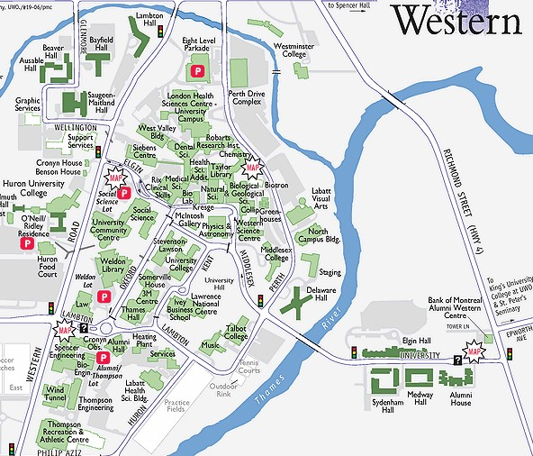

MAPS
Room 15 - Alumni Hall
Room
15 in Alumni Hall is also known as the wrestling room. It is
downstairs in Alumni Hall and can be reached by entering Alumni Hall
through the front entrance and following the hall to the left. Go
down the stairs and follow the hallway to Room 15. Shoes
must be removed as the floor is padded with wrestling matts.
Several lots on campus close to Alumni Hall offer free parking on
Sunday nights.
UCC
Atrium
Meetings are held in the atrium of UCC
near the entance to the Spoke. Parking on campus on Monday nights will
require you to pay for parking. Most meters on campus are in
effect until 8 p.m. on weekdays. If available, the best option is
to park in the lot beside Weldon library which has a $4 coin entry in
the evenings.
